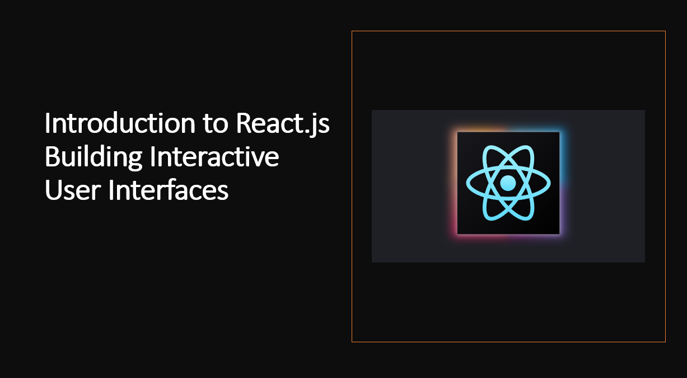

Introduction
React.js is a JavaScript library for building user interfaces. It is maintained by Facebook and a community of individual developers and companies. React can be used as a base in the development of single-page or mobile applications.
Let's start with the basics.
1. Setting Up a React Project
To get started with React.js, you need to set up a new project. You can use tools like Create React App to quickly generate a new React project with all the necessary dependencies and configurations.
Create React App
Create React App is a tool built by developers at Facebook to help you build React applications. It saves you from time-consuming setup and configuration. You simply run one command and Create React App sets up the tools you need to start your React project.
Installation
To use Create React App, you need to have Node.js installed on your computer. Node.js is a JavaScript runtime environment that includes everything you need to execute JavaScript code outside of a browser. To install Node.js, go to nodejs.org, and download the installer for your operating system.
Once you have Node.js installed, you can use the npm command-line tool to install Create React App.
npm install -g create-react-app
This command installs Create React App globally on your computer, which allows you to use the create-react-app command anywhere on your system.
Creating a New Project
Now that you have Create React App installed, you can use it to create a new React project by running the following command:
This command creates a new directory called my-app in the current working directory. Inside that directory, it generates the initial project structure and installs the dependencies.
Running the Project
Once the installation is done, you can open your project folder:
Inside the newly created project, you can run some built-in commands:
This command runs the app in development mode. It opens http://localhost:3000 in the browser and reloads the page whenever you make edits.
This command launches the test runner in the interactive watch mode.
This command builds the app for production to the build folder. It correctly bundles React in production mode and optimizes the build for the best performance.
2. Creating Components
React.js revolves around components, which are the building blocks of your user interface.
Components are reusable and self-contained units that encapsulate functionality and UI elements. You can create functional components using functions or class components using ES6 classes.
Functional Components
Functional components are the simplest way to define a component in React. They are functions that return a React element. You can use ES6 arrow functions to define functional components.
const Greeting = () => {
return <h1>Hello World</h1>;
};
Class Components
Class components are ES6 classes that extend from React.Component. They must have a render method that returns a React element. You can use class components whenever you need to manage state or use lifecycle hooks.
class Greeting extends React.Component {
render() {
return <h1>Hello World</h1>;
}
}
JSX
JSX is a syntax extension to JavaScript that allows you to write HTML-like code in React. It is not required to use JSX in React, but it is recommended. JSX makes your code more readable and easier to debug. It also allows you to use the full power of JavaScript within JSX expressions.
As an example:
const Greeting = () => {
return <h1>Hello World</h1>;
};
Rendering Components
To render a component in React, you need to call ReactDOM.render() and pass it the component to render and the DOM element where you want to render the component.
const Greeting = () => {
return <h1>Hello World</h1>;
};
ReactDOM.render(<Greeting />, document.getElementById('root'));
3. Working with Props
Props are inputs to components. They are single values or objects containing a set of values that are passed to components on creation using a naming convention similar to HTML-tag attributes. They are data passed down from a parent component to a child component.
Passing Props
You can pass props to components using the same syntax as HTML attributes. Props are passed to components via HTML attributes.
const Greeting = (props) => {
return <h1>Hello {props.name}</h1>;
};
ReactDOM.render(<Greeting name="John" />, document.getElementById('root'));
Using Props
You can access props inside functional components using the props argument. Inside class components, you can access props via this.props.
const Greeting = (props) => {
return <h1>Hello {props.name}</h1>;
};
class Greeting extends React.Component {
render() {
return <h1>Hello {this.props.name}</h1>;
}
}
Default Props
You can define default values for props by assigning to the special defaultProps property:
Greeting.defaultProps = {
name: 'Anonymous',
};
Props in JSX
You can use props in JSX expressions by wrapping them in curly braces.
const Greeting = (props) => {
return <h1>Hello {props.name}</h1>;
};
Props in Components
You can pass props to components using the same syntax as HTML attributes. Props are passed to components via HTML attributes.
const Greeting = (props) => {
return <h1>Hello {props.name}</h1>;
};
ReactDOM.render(<Greeting name="John" />, document.getElementById('root'));
4. Working with State
State is an object that represents the parts of the app that can change. Each component can maintain its own state, which lives in an object called this.state. You should always use setState() to update the state. Calling setState() schedules an update to a component’s state object. When state changes, the component responds by re-rendering.
Initializing State
To initialize state for a functional component you can use the useState() hook. The useState() hook takes the initial state as an argument and returns an array of two values: the current state and a function that updates it.
const Counter = () => {
const [count, setCount] = React.useState(0);
return <button onClick={() => setCount(count + 1)}>{count}</button>;
};
Updating State
To update state for a functional component you can use the useState() hook. The useState() hook takes the initial state as an argument and returns an array of two values: the current state and a function that updates it.
const Counter = () => {
const [count, setCount] = React.useState(0);
return <button onClick={() => setCount(count + 1)}>{count}</button>;
};
State in Class Components
To initialize state in a class component, assign an object to this.state in the constructor:
class Counter extends React.Component {
constructor(props) {
super(props);
this.state = { count: 0 };
}
render() {
return <button onClick={() => this.setState({ count: this.state.count + 1 })}>{this.state.count}</button>;
}
}
Updating State in Class Components
To update state in a class component, call this.setState() with an object containing the properties you want to update. You can also pass a function to this.setState() that receives the previous state and props as arguments and returns an object with the updated values.
class Counter extends React.Component {
constructor(props) {
super(props);
this.state = { count: 0 };
}
render() {
return <button onClick={() => this.setState({ count: this.state.count + 1 })}>{this.state.count}</button>;
}
}
5. Working with Events
Events are actions that happen in the system you are programming, which the system tells you about so you can respond to them in some way if desired. In React, events are written in camelCase syntax using JSX. With JSX you pass a function as the event handler, rather than a string.
Handling Events in JSX
You can handle events in React with JSX by passing a function as the event handler, rather than a string.
const Button = () => {
const handleClick = () => {
console.log('Clicked');
};
return <button onClick={handleClick}>Click Me</button>;
};
Handling Events in Class Components
You can handle events in React with class components by defining a method as the event handler, which receives the event as an argument.
class Button extends React.Component {
handleClick() {
console.log('Clicked');
}
render() {
return <button onClick={this.handleClick}>Click Me</button>;
}
}
6. Reusing Components
Components are the building blocks of React apps. They are reusable pieces of code that can be composed to create complex UIs. You can create components by composing them with other components. You can also create components that are composable by other components.
Composing Components
You can create components by composing them with other components. You can also create components that are composable by other components.
const Button = () => {
return <button>Click Me</button>;
};
const App = () => {
return (
<div>
<Button />
<Button />
</div>
);
};
Composing Components with Props
You can create components by composing them with other components. You can also create components that are composable by other components.
const Button = (props) => {
return <button>{props.label}</button>;
};
const App = () => {
return (
<div>
<Button label="Click Me" />
<Button label="Click Me" />
</div>
);
};
Composing Components with Children
You can create components by composing them with other components. You can also create components that are composable by other components.
const Button = (props) => {
return <button>{props.children}</button>;
};
const App = () => {
return (
<div>
<Button>Click Me</Button>
<Button>Click Me</Button>
</div>
);
};
7. Styling Components
React doesn't enforce any specific styling method. You can use CSS, inline styles, or even CSS-in-JS libraries to style your components.
Inline Styles
You can use inline styles in React by passing a style object to the style attribute of an element.
const Button = () => {
const style = {
backgroundColor: 'blue',
color: 'white',
padding: '1rem',
borderRadius: '5px',
};
return <button style={style}>Click Me</button>;
};
CSS Modules
You can use CSS Modules in React by naming your CSS files with the .module.css extension and importing them as objects.
import styles from './Button.module.css';
const Button = () => {
return <button className={styles.button}>Click Me</button>;
};
CSS-in-JS
You can use CSS-in-JS libraries in React by installing them and using them as components.
import styled from 'styled-components';
const Button = () => {
const StyledButton = styled.button`
background-color: blue;
color: white;
padding: 1rem;
border-radius: 5px;
`;
return <StyledButton>Click Me</StyledButton>;
};
8. Conditional Rendering
Conditional rendering is the process of rendering different UI markup based on a condition. In React, you can use conditional rendering to render a component differently based on its state or props.
Conditional Rendering in JSX
You can use conditional rendering in JSX by wrapping the condition in curly braces and using a ternary operator.
const Button = (props) => {
return <button>{props.isLoggedIn ? 'Logout' : 'Login'}</button>;
};
Conditional Rendering in Class Components
You can use conditional rendering in class components by using an if statement to return different JSX based on the condition.
class Button extends React.Component {
render() {
if (this.props.isLoggedIn) {
return <button>Logout</button>;
} else {
return <button>Login</button>;
}
}
}
Conditional Rendering with Logical && Operator
You can use conditional rendering in JSX by wrapping the condition in curly braces and using a logical && operator.
const Button = (props) => {
return <button>{props.isLoggedIn && 'Logout'}</button>;
};
Conditional Rendering with Ternary Operator
You can use conditional rendering in JSX by wrapping the condition in curly braces and using a ternary operator.
const Button = (props) => {
return <button>{props.isLoggedIn ? 'Logout' : 'Login'}</button>;
};
9.Fetching Data and APIs
To build dynamic web applications, you'll often need to fetch data from APIs. React provides lifecycle methods and hooks that allow you to perform data fetching and updates efficiently.
Fetching Data with useEffect
You can fetch data with useEffect by passing a callback function as the first argument and an array of dependencies as the second argument.
const App = () => {
const [data, setData] = React.useState(null);
React.useEffect(() => {
fetch('https://jsonplaceholder.typicode.com/todos/1')
.then((response) => response.json())
.then((data) => setData(data));
}, []);
return <div>{JSON.stringify(data)}</div>;
};
Fetching Data with Class Components
You can fetch data with class components by defining a componentDidMount method that fetches data and sets it to state.
class App extends React.Component {
state = {
data: null,
};
componentDidMount() {
fetch('https://jsonplaceholder.typicode.com/todos/1')
.then((response) => response.json())
.then((data) => this.setState({ data }));
}
render() {
return <div>{JSON.stringify(this.state.data)}</div>;
}
}
Fetching Data with useEffect and Async/Await
You can also fetch data with useEffect and async/await by defining an async function and calling it in useEffect.
const App = () => {
const [data, setData] = React.useState(null);
React.useEffect(() => {
const fetchData = async () => {
const response = await fetch(
'https://jsonplaceholder.typicode.com/todos/1'
);
const data = await response.json();
setData(data);
};
fetchData();
}, []);
return <div>{JSON.stringify(data)}</div>;
};
Conclusion
We covered the basics of React, including JSX, components, props, state, hooks, and more. We also learned how to use React to build a simple web application. Now that you've learned the basics of React, you can start building your own web applications with React.
Happy Coding! 😊